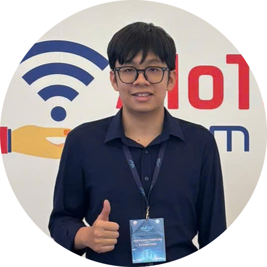
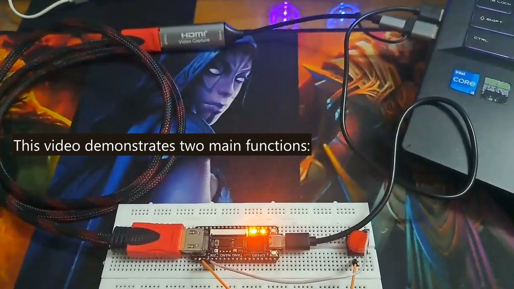

Design Verification
Understanding intent, finding failure modes, checking results, and turning debugging into repeatable evidence.
Electronics & Telecommunications · HCMUTE
I am an undergraduate exploring how hardware moves from an idea to working silicon and FPGA systems. My main direction is Design Verification, supported by RTL Design.

01 / SELECTED WORK
Start with the overview below. Open any project to see its story, architecture, implementation, visual evidence, demo, and source links in one dedicated page.

01 FULL CASE STUDYA team-built FPGA system combining an RV32I processor, custom CNN acceleration, firmware, storage, and HDMI output.
 02
PROJECT STORY
02
PROJECT STORY
A first-year autonomous robot that combines line sensing, ultrasonic scanning, motor control, and finite-state behavior.
This gallery is designed to grow: every future project gets one card here and one focused detail page.
02 published projects02 / ABOUT
I’m Huu Nguyen Phu, an Electronics and Telecommunications undergraduate at HCMUTE (2024–2028).
I enjoy the point where specifications, RTL, testbenches, firmware, and physical hardware meet. My projects help me practice structured debugging and honest engineering documentation—not just reaching a demo.
Understanding intent, finding failure modes, checking results, and turning debugging into repeatable evidence.
Building clear datapaths, control logic, interfaces, and modules that can be tested and reasoned about.
03 / CONTACT
For internship opportunities, project discussions, or engineering conversations, email me directly.